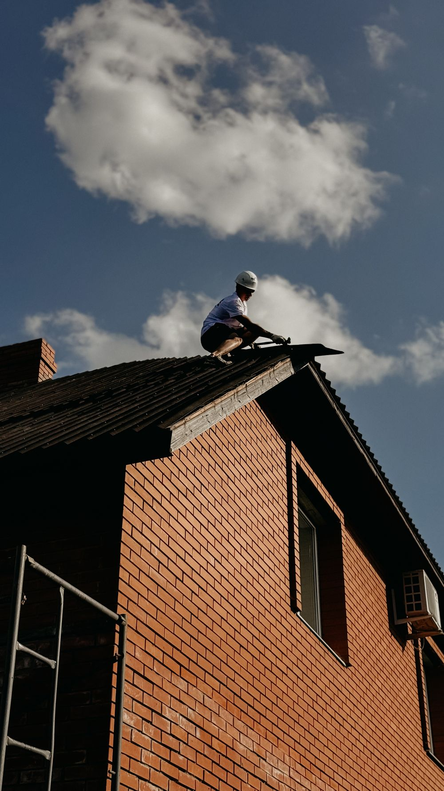
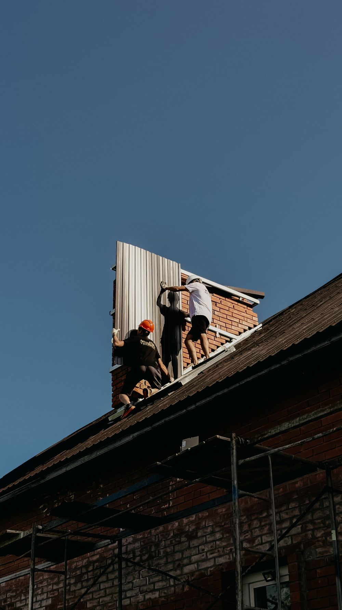

Re-roof, replacement, repair.
Two of our five reviews are roofs. Both are five stars, and between them they name the two things that decide whether a re-roof goes well: the sequence, and what the crew does to the ground while they are working above it.
What a re-roof actually involves.
Five stages. The one most often skipped is the second, and it is the one that decides how long the new roof lasts.
Tear off to the deck
The old covering comes off completely. Roofing over the top of a failing roof buys a few years and hides everything underneath it, which is why we do not do it as a matter of course.
Stage one
Inspect and replace the deck
With the roof stripped, the sheathing is visible for the first time in decades. Soft, delaminated or water-stained sheets get replaced now, because no underlayment or shingle fixes a deck that will not hold a nail.
Stage two
Underlayment, flashings, valleys
The layer nobody sees and every leak comes through. Penetrations, valleys, wall abutments and the eave detail are where water actually gets in — the field of a roof rarely fails on its own.
Stage three
Courses, ridge, finish
Courses set to the specified exposure and fastened to pattern, then ridge and hip. Getting exposure right is what makes a roof read straight from the street and reach its rated life.
Stage four
Clear the site properly
Magnet sweep, debris out, landscaping checked. A customer went out of their way to say the crew protected their landscaping very nicely — which tells you it is not the default in this trade.
Dax B.
When a repair is the honest answer.
Repair makes sense
The roof has real life left and one detail has failed — a lifted flashing, a valley, a torn section after wind, a few tabs gone. Roof repair is one of the topics Google counts across our reviews, so it is genuine work here rather than a reluctant favour.
Replacement makes sense
The covering is at the end of its life, the deck is suspect, or the same leak keeps returning in a different place. Patching a roof that is failing everywhere is money spent to postpone the same decision.
We will tell you which one you are looking at, including when it is the cheaper one.



Tell us what the roof is doing.
A stain on a ceiling, tabs on the lawn after wind, or a roof you simply know is old. Call and describe it.